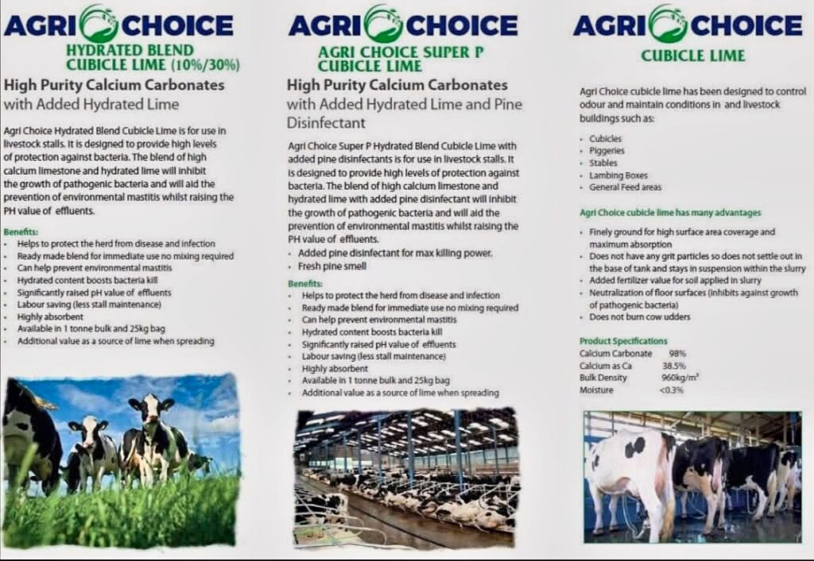
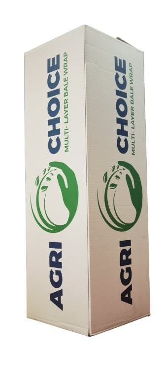

Home / Agri Choice
Agri Choice
Agri Choice: high quality, at the best price
Agri Choice is our buying group's own brand. Because the group buys together, you get high quality products at the best prices.
Our group's own brand
High quality, best prices
Quality you can rely on, bought together through our buying group and passed on at the keenest price we can.
The range
Agri Choice in our yard
Mineral bags
Calf/Beef GP, Sheep, Dry Cow and Maize Beet minerals, in 25 kg bags.
Mineral buckets
Mineral and vitamin buckets for stock at grass or indoors.
Cubicle lime
Hydrated Blend, Super P and standard cubicle lime for cleaner, drier beds.
Silage wrap
Agri Choice multi-layer bale wrap for baled silage.
Silage covers
Agri Choice covers for silage pits.



Ask for Agri Choice at the counter, or ring us for a price.
053 938 3304
Mon – Fri 9am – 6pm · Sat 9am – 1pm